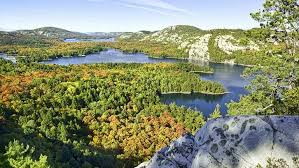
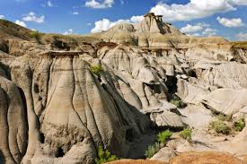
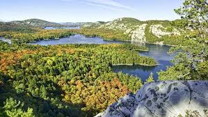
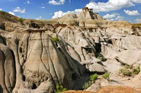

At the end of 2024, Canada had conserved:
- 🍃 13.8% of its terrestrial area, including 12.8% in protected areas
- 🍃 15.5% of its marine territory, including 11.4% in protected areas
By 2030, the Federal Government wants to Protect 30% of Canada's Lands and Waters
Canada's Protected Areas
- National Parks
- To protect and present the natural landscapes and natural phenomena that occur in Canada's 39 regions.
For more information: National Parks System Plan - National Marine Conservation Areas – NMCAs
- The Government of Canada is committed to protecting biodiversity and conserving 30% of marine and coastal areas by 2030.
For more information: National Marine Conservation Areas - Marine Protected Areas – MPAs
- Fall under Canada's Oceans Act and are the responsibility of Fisheries and Oceans Canada.
For more information: Marine Protected Areas and Networks - National Wildlife Areas – NWAs
- Created and managed for the purposes of wildlife conservation, research, and interpretation.
For more information: National Wildlife Areas